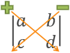
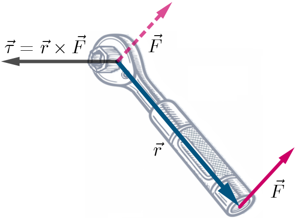

Cross Product, Planes & Surfaces
Vectors and the Geometry of Space
Vectors and the Geometry of Space
Relatively speaking, the cross product is a bit more difficult to compute compared to the dot project. For one thing, the result of a cross product is a vector, not a scalar like the dot product. It is also going to involve a little bit of linear algebra, namely determinants of 2x2 and 3x3 matrices. A matrix is just a collection of numbers organized into rows and columns. So a 2x2 matrix has 2 rows and 2 columns, such as the matrix below.
\[\begin{bmatrix} 1 & 2 \\ 3 & 4 \end{bmatrix}\]The determinant of a 2x2 matrix is a scalar computed using the following formula.
\[\left| \begin{matrix} a & b \\ c & d \end{matrix} \right| = ad - bc\]The easy way to remember this is that you are just multiplying the diagonal values and subtracting the results. First, multiply diagonally starting in the top-left corner. Second, multiply diagonally starting in the top-right corner. Then subtract the second value from the first value.

Self-Check #1: Compute the following determinant.
\[\left| \begin{matrix} 7 & 5 \\ \text{-}2 & 1 \end{matrix} \right|\](Answer: 17) -- Multiply diagonally, subtracting the 2nd product from the 1st.
\[\left| \begin{matrix} 7 & 5 \\ \text{-}2 & 1 \end{matrix} \right| = (7)(1) - (5)(\text{-}2) = 7 + 10 = 17\]As we will see below, a cross product of two vectors is defined as the determinant of a 3x3 matrix, which involves computing several 2x2 determinants. So let's quickly look at the process for computing a 3x3 determinant, and then we can finally look at how to compute a cross product
The determinant of a 3x3 matrix is a scalar value computed using the following formula.
\[\begin{align*} \left| \begin{matrix} a & b & c \\ d & e & f \\ g & h & i \end{matrix} \right| &= a \left| \begin{matrix} e & f \\ h & i \end{matrix} \right| - b \left| \begin{matrix} d & f \\ g & i \end{matrix} \right| + c \left| \begin{matrix} d & e \\ g & h \end{matrix} \right| \end{align*}\]Notice that the result of the 3x3 determinant requires computing three 2x2 determinants, which we already learned about above. Each 2x2 determinant is multiplied by a value from the top row of the matrix. The values within each determinant come from the 2nd and 3rd rows of the matrix and skip the column where the coefficient was located. So for example, the first coefficient is the \(a\) value which is located in the 1st row and 1st column. The values inside the corresponding determinant come from the 2nd and 3rd columns (we skip the 1st column since that is where \(a\) is located). Repeat this idea for \(b\) in the 2nd column and \(c\) in the 3rd column. Also, notice that the middle term is being subtracted. We need to always subtract or change the sign of the middle term. Let's apply this idea to computing a cross product of two vectors.
The cross product of vectors \(\vec{u} = \langle u_1,u_2,u_3 \rangle\) and \(\vec{v} = \langle v_1,v_2,v_3 \rangle\) is defined by the following formula.
\[\begin{align*} \vec{u} \times \vec{v} &= \left| \begin{matrix} \hat{\imath} & \hat{\jmath} & \hat{k} \\ u_1 & u_2 & u_3 \\ v_1 & v_2 & v_3 \end{matrix} \right| \\[5pt] &= \left| \begin{matrix} u_2 & u_3 \\ v_2 & v_3 \end{matrix} \right| \hat{\imath} - \left| \begin{matrix} u_1 & u_3 \\ v_1 & v_3 \end{matrix} \right| \hat{\jmath} + \left| \begin{matrix} u_1 & u_2 \\ v_1 & v_2 \end{matrix} \right| \hat{k}\end{align*}\]Here are a few things to remember about the cross product.
Here are some special relationships that we have for the cross product of two vectors, \(\vec{u}\) and \(\vec{v}\).
Let's look at an example illustrating these relationships.
Self-Check #2: What is the area of the parallelogram whose opposite sides correspond to the vectors \(\vec{u} = \langle 4,\text{-}1,2 \rangle\) and \(\vec{v} = \langle 5,3,\text{-}2 \rangle\)? Round your answer to 2 decimal places.
(Answer: 25.08) -- Begin by computing the cross product of the given vectors.
\[\begin{align*} \vec{u} \times \vec{v} &= \left| \begin{matrix} \hat{\imath} & \hat{\jmath} & \hat{k} \\ 4 & \text{-}1 & 2 \\ 5 & 3 & \text{-}2 \end{matrix} \right| \\[5pt] &= \langle (\text{-}1)(\text{-}2) - (2)(3), \text{-}\left((4)(\text{-}2) - (2)(5)\right), (4)(3) - (\text{-}1)(5) \rangle \\[5pt] &= \langle 2-6, \text{-}(\text{-}8-10), 12+5 \rangle \\[5pt] &= \langle \text{-}4, 18, 17 \rangle \end{align*}\]The area of the parallelogram formed by \(\vec{u}\) and \(\vec{v}\) is equal to the magnitude of their cross product.
\[\left|\vec{u} \times \vec{v} \right| = \sqrt{(\text{-}4)^2+(18)^2+(17)^2} = \sqrt{629} \approx 25.08\]The cross product has the following properties given vectors \(\vec{u}\), \(\vec{v}\), and \(\vec{w}\) and a scalar \(c\).
One common application of the cross product is to determine torque (\(\tau\)), which is the rotational force expressed as a vector when a constant force \(\vec{F}\) is applied to a lever at a point defined by the radial position vector \(\vec{r}\).

Suppose as bolt is located at the origin and a wrench is being used to turn the bolt. If a force of \(\vec{F} = \langle 0, 10, \text{-}0.05 \rangle\) Newtons is applied to the end of the wrench at \(\vec{r} = \langle 0.2, \text{-}0.1, \text{-}0.05 \rangle\) meters, what is the magnitude of torque applied to the bolt?
To start this problem, it might help to first simplify the given vectors a little bit. This step isn't truly necessary, but it allows us to convert the decimals to fractions and factor out a common coefficient from each vector.
\[\begin{align*} \vec{r} = \langle 0.2, \text{-}0.1, \text{-}0.05 \rangle &= \langle \frac{20}{100}, \text{-}\frac{10}{100}, \text{-}\frac{5}{100} \rangle \\[5pt] &= \frac{5}{100}\langle 4, \text{-}2, \text{-}1\rangle \\[5pt] &= \frac{1}{20}\langle 4, \text{-}2, \text{-}1\rangle \end{align*}\] \[\begin{align*} \vec{F} = \langle 0, 10, \text{-}0.05 \rangle &= \langle \frac{0}{100}, \frac{1000}{100}, \text{-}\frac{5}{100} \rangle \\[5pt] &= \frac{5}{100}\langle 0, 200, \text{-}1\rangle \\[5pt] &= \frac{1}{20}\langle 0, 200, \text{-}1 \rangle \end{align*}\]Next up, we need to compute the torque using the formula \(\vec{\tau} = \vec{r} \times \vec{F}\). We can also apply the associative property of cross products to factor out the common coefficients.
\[\begin{align*} \vec{\tau} = \vec{r} \times \vec{F} &= \frac{1}{20}\frac{1}{20}\left| \begin{matrix} \hat{\imath} & \hat{\jmath} & \hat{k} \\ 4 & \text{-}2 & \text{-}1 \\ 0 & 200 & \text{-}1 \end{matrix} \right| \\[5pt] &= \frac{1}{400} \langle (\text{-}2)(\text{-}1) - (\text{-}1)(200), \text{-} \left((4)(\text{-}1) - (\text{-}1)(0)\right), (4)(200) - (\text{-}2)(0) \rangle \\[5pt] &= \frac{1}{400}\langle 2+200, \text{-}(\text{-}4+0), 800+0 \rangle \\[5pt] &= \frac{1}{400}\langle 202, 4, 800 \rangle \\[5pt] &= \langle \frac{202}{400}, \frac{4}{400}, \frac{800}{400} \rangle \\[5pt] &= \langle 0.505, 0.01, 2 \rangle N \end{align*}\]Lastly, we need to compute the magnitude of the torque vector. We can do this with the vector in decimal format or we can use the expression with the \(\frac{1}{400}\) coefficient factored out front.
\[\begin{align*} |\tau| &= \frac{1}{400} \sqrt{202^2 + 4^2 + 800^2} \\[5pt] &= \frac{1}{400} \sqrt{680820} \\[5pt] &= \frac{1}{200} \sqrt{170205} \\[5pt] &\approx 2.06 N\end{align*}\]©2025 M4thG33x (new window) Some Rights Reserved.